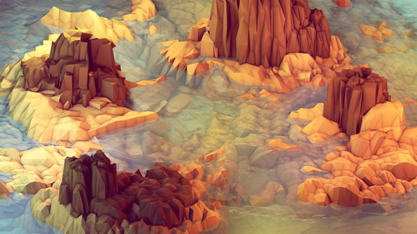

Low Polygon Art
Try angled triangles
by Adam Tavares
Published June 22, 3000
I admire people who can capture the essence of an object or form. There's an art to abstraction. One has to know their audience. How much abstraction can they handle?
Low polygon art requires a deep understanding of color and lighting. Otherwise the forms can be obscured in shadows or washed out.
Personally I find ultra-realistic 3D renderings to be boring. They are impressive from a technical standpoint. It is valuable to try to recreate nature digitally. Inherent in that pursuit is the creation of new techniques. But in terms of personal expression realism will always lose out to more stylized abstract art.
A stylized image leaves out details that the artist believes is superfluous.
Jet Grind Radio Wind Waker
Cell shading. Ever hear that term? Know what it means? Fragment shading, Pixel shading. Cell shading
{kind=link}
image by Timothy J. Reynolds
{kind=link}
Low polygon art requires a deep understanding of color and lighting.
{kind=link}
{kind=link}
{kind=link}